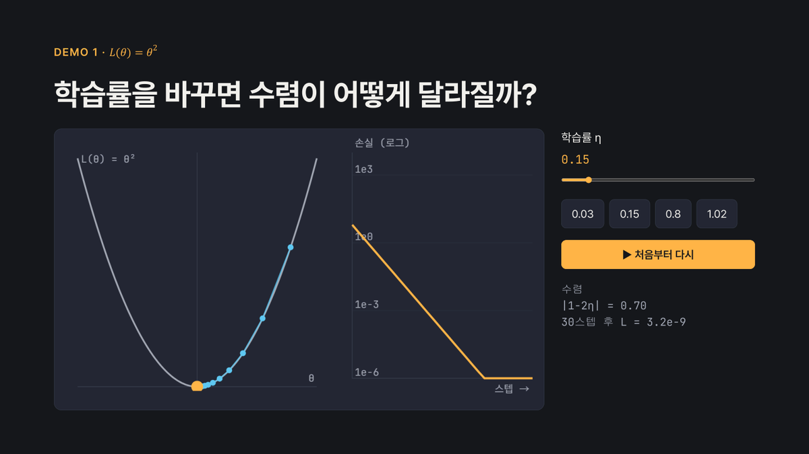
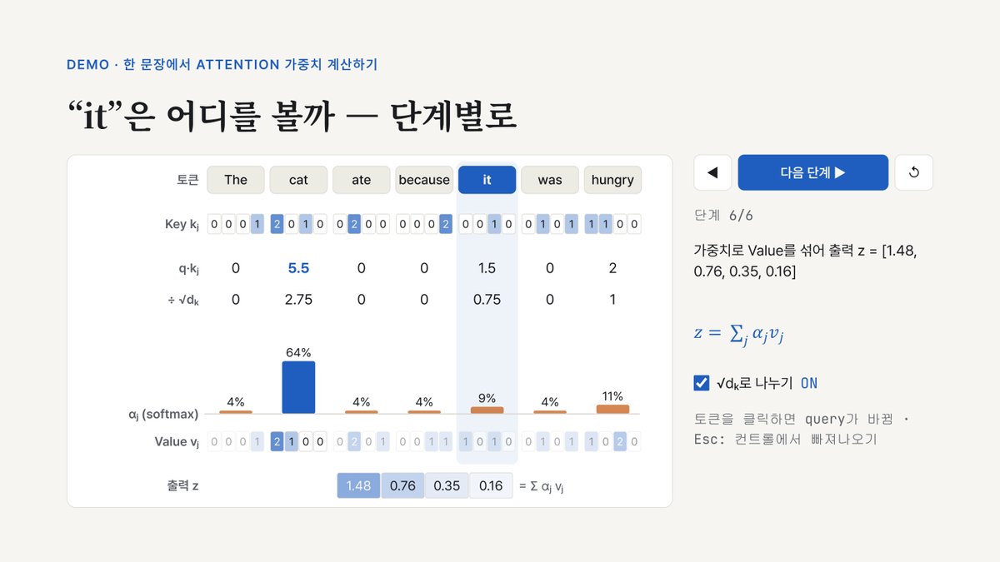

interactive-slides 예제 덱
Claude Code 스킬 interactive-slides로 만든 HTML 발표자료입니다. 열어서 슬라이더와 버튼을 직접 조작해 보세요.

경사하강법과 학습률
강의용 · 8장 · 학습률 슬라이더 데모, 2D 골짜기 데모

Attention 메커니즘 리뷰
학술용 · 9장 · 토큰별 attention 가중치 단계별 계산 데모
키: →/Space 다음 · ← 이전 · 숫자+Enter 이동 · F 전체화면 · S 발표자 화면 · Esc 데모 컨트롤에서 빠져나오기